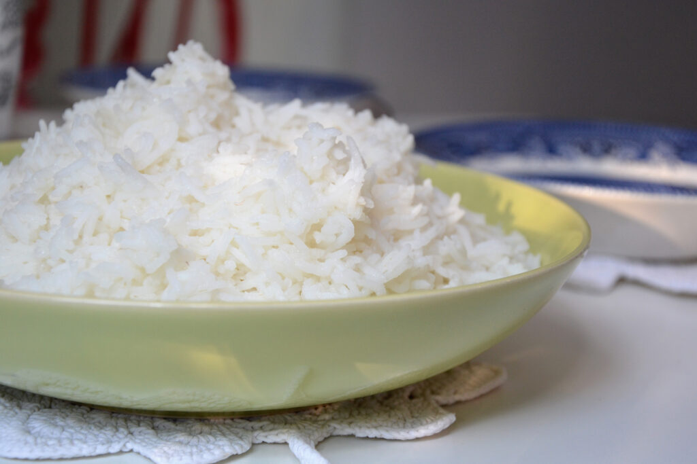

Pasta Rice

Clean Rice
Ingredients
- 1 corned beef brisket with spice packet (3 pounds)
- 1 teaspoon whole black peppercorns
- 2 tablespoons butter/li>
- 1/2 cup uncooked long grain rice
- 1/4 cup uncooked egg noodles or vermicelli, broken into small pieces
- 1-1/3 cups chicken broth
Steps
- In a small saucepan, melt butter. Add rice and noodles; cook and stir for 3-4 minutes or until lightly browned. Stir in broth. Bring to a boil. Reduce heat; cover and simmer for 20-25 minutes or until rice is tender and broth is absorbed.